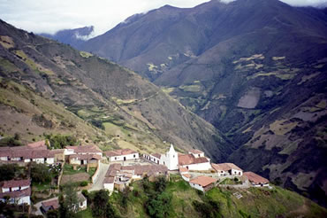

El techo de Venezuela
Si uno les pregunta a los residentes de Caracas dónde se puede ver la Venezuela de antaño, muchos contestan que en las montañas del estado de Mérida. Mérida es una muestra de cómo era Venezuela antes del descubrimiento del petróleo y antes de que el 75% de la población se concentrara en los grandes centros urbanos.
En Mérida, moderna ciudad rodeada de aldeas andinas, se disfruta de la tranquilidad y del encanto del ayer. Éste es el techo de Venezuela, tierra de contrastes sorprendentes, donde la caña de azúcar se cultiva en la sombra del Pico de Bolívar, de 5.002 metros de altura.
La Carretera Panamericana
La mayoría de los visitantes va de Caracas a Mérida en avión.Es sólo una hora de vuelo. Sin embargo, es mucho más interesante hacer el viaje por carretera, en particular el tramo de 173 kilómetros que forma parte de la Carretera Panamericana. Este tramo está bien pavimentado pero el viaje en auto lleva mucho tiempo. Hay que hacerlo despacio a causa de la cantidad de curvas cerradas.
El camino sube abruptamente desde las llanuras tropicales hasta el paso en la cima del Pico del Águila. A esta altura la temperatura es agradable en julio, aunque a los pocos kilómetros es bien diferente. En los Andes la elevación determina no sólo la temperatura, sino también la manera de vivir de la gente. Según la altitud, se cultiva café o papas, se lleva ropa de algodón o ponchos de lana gruesa. Se dice que hasta el carácter de las personas varía con la altitud.
A medida que el camino asciende hacia el Pico del Águila, con cada curva surgen nuevos panoramas de las montañas y los valles. Dan ganas de parar a cada paso y contemplar el paisaje, pero hay muy pocos lugares donde el camino es lo bastante ancho para estacionar el coche. Pronto empieza el páramo, región alta y fría a más de 3.000 metros de altitud. El paisaje es desolado. Los colores vivos han desaparecido y la tierra es oscura. Hay pocas casas, pues sólo los venezolanos más recios pueden ganarse la vida en este ambiente. Cerca de la cima una niebla densa y fría se cierne como una cortina blanca frente al coche. Al atravesarla, los viajeros se encuentran en lo alto del Pico del Águila a 4.115 metros de altitud. En este paso de la montaña hay una inmensa estatua de un águila con las alas extendidas, símbolo del valor de Bolívar al cruzar los Andes buscando la libertad de América. El descenso del Águila se hace rápidamente.
Algunos pueblos andinos 
Apartaderos, situado a 3.470 metros de altitud, es una aldea turística al estilo de las de los Alpes. Es un lugar excelente donde uno puede parar y disfrutar del paisaje andino.
Pasado Apartaderos, el camino desciende hacia Mérida y el terreno es más suave y la vegetación más exuberante. Se pasa por Mucuchíes, Mucuruba y Tobay, pueblecitos coloniales preciosos que están en el camino a Mérida. Cada uno de ellos tiene una plaza Bolívar, una iglesia antigua y bien cuidada y edificios muy juntos.
La ciudad de Mérida
Mérida está en una mesa baja rodeada de altísimas montañas, entre ellas el Pico de Bolívar, el más alto del país. Durante muchos años las montañas constituían un gran obstáculo al cambio, pero hoy día Mérida es una capital estatal moderna, de 125.000 habitantes. En la ciudad quedan pocos edificios históricos pero por todas partes se encuentran parques y plazas llenos de flores. La plaza Bolívar, la más interesante de la ciudad, está rodeada de edificios gubernamentales y de la catedral. Cerca de la plaza hay varios restaurantes pequeños que sirven típica comida venezolana. También se ven artistas jóvenes pintando escenas de la vida de las aldeas andinas, uno de los temas populares de los pintores venezolanos.
La visita a Mérida no está completa si uno no se monta en el teleférico. Éste, que es el más largo y más alto del mundo, asciende hasta la cima del Pico Espejo, a 4.765 metros de altitud. Aparte de ser un viaje emocionante para el visitante, el teleférico es un medio de transporte muy útil para los habitantes de los Andes que viven en remotas aldeas de las montañas. Para algunos el teleférico es el único medio de comunicación con Mérida.
El teleférico no funciona los lunes ni martes, y éstos son días buenos para visitar las aldeas andinas históricas de los alrededores de Mérida. Una de las más visitadas es Jají, a unos 45 kilómetros al suroeste. Los habitantes de Jají se sienten muy orgullosos de su pueblo que fue reconstruido a fines de la década de los 60 y tiene arquitectura colonial típica.
Pueblo Nuevo del Sur
Si uno quiere visitar una localidad menos turística, puede ir a Pueblo Nuevo del Sur, declarado monumento nacional en 1960. A las cuatro de la tarde, Pueblo Nuevo del Sur descansa. Los habitantes están sentados indolentemente en la plaza o en el frente de sus casas conversando en voz baja. Un hombre lleva un pesado saco en un burro como lo han hecho innumerables generaciones antes que él. De las puertas abiertas de la vieja iglesia de Santa Rita salen las delicadas notas de un violín.
El que llega a Pueblo Nuevo del Sur ha viajado en el espacio y en el tiempo. Aquí no hay hoteles ni restaurantes. El paso de los siglos no ha dejado más que alguno que otro retoque. Es lógico que Pueblo Nuevo sea un monumento histórico. Desde este apacible lugar se puede regresar a Mérida en una hora, pero el viaje supone el transcurso de varios siglos. Al salir Pueblo Nuevo uno se da cuenta de que ha visto lo que vino a ver en Mérida: una visión de la Venezuela de ayer.